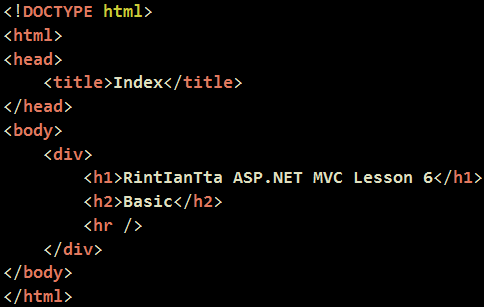

MVC프로젝트를 다 만드셨고 컨트롤러에 뷰까지 다 만든 이후부터 시작하겠습니다.

우선 @을 사용하면 소스를 쓸 수 있게 되지요 ?!
그럼 Html 이라는 프로퍼티를 써주시면 됩니다.
프로퍼티를 쓰고 『 . 』을 찍어주시면 다음과 같이 여러 메소드들이 나오는데요..!
일반적으로 다음과 같이 input의 type을 쳤을 때 나오는 것과 대응이 된답니다.
그래서 이렇게 뿅뿅 써보았습니다.
"음, 저 파라메터는 어떤 역할을 하나요 .. ?"
『잠시 후에 결과를 보시기 바랍니다. !』
쨌건, Form의 제출을 위해 다음과 같이 Html.BeginForm() 이라는 녀석으로 싸주었고,
Submit 버튼을 따로 주었습니다. 'ㅁ'
실행하시면 다음과 같은 결과를 보실 수 있구요.
소스보기를 누르시면 다음과 같은 결과를 보실 수 있답니다.
간단하죠 ㅇㅅㅇ .. ?